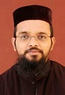

PRIESTS OF OUR CHURCH
Our church has always been very keen to bring up its members in great religious faith and social values. There have always been many who were willing to dedicate their lives for the betterment of the church, Christianity and to the society as a whole. So in our long 800 years of legacy, we have given to Malanakar Sabha many priests and preachers of the highest quality and still continuing the same. We would like to present to you all those great people who has dedicated their life for the church and the community
His Grace Dr. Jacob Mar Iraneus
 His grace was born on 15th August 1949 as the son of T. O. Cherian and Kunjelyamma, Thekumthala (Pallickal). His grace completed his schooling from M.G.D.H.S, Puthussery, his pre-degree from Christian College, Chengannoor and graduation from Madras Christian College. His grace got doctorate from University of Kerala and then completed M.D.H from U.S.A. His grace was ordained as priest on 8th February 1975 by His Grace Thomas Mar Thimothios metropolitan. His grace was enthroned as bishop on 10th august 1993 by His Grace Marthoma Mathews 2nd Catholicose. From august 1995 to 1997 his grace was the assistant metropolitan in Malabar Diocese and from 1997 his grace was given the charge of Madras Diocese. His grace has also served as the president of Youth Movements in Malanakara Sabha.
His grace was born on 15th August 1949 as the son of T. O. Cherian and Kunjelyamma, Thekumthala (Pallickal). His grace completed his schooling from M.G.D.H.S, Puthussery, his pre-degree from Christian College, Chengannoor and graduation from Madras Christian College. His grace got doctorate from University of Kerala and then completed M.D.H from U.S.A. His grace was ordained as priest on 8th February 1975 by His Grace Thomas Mar Thimothios metropolitan. His grace was enthroned as bishop on 10th august 1993 by His Grace Marthoma Mathews 2nd Catholicose. From august 1995 to 1997 his grace was the assistant metropolitan in Malabar Diocese and from 1997 his grace was given the charge of Madras Diocese. His grace has also served as the president of Youth Movements in Malanakara Sabha.
Rev. Fr. P. Thomas
 He was born in 1924 as the son of Fr. P.T Alexander, Plakottu. After preliminary education he joined the Vaidika Seminary and was ordained as priest on 13th June 1954. He has served as the vicar of several parishes in the Niranam diocese. He is one of the senior most priests in the parish.
He was born in 1924 as the son of Fr. P.T Alexander, Plakottu. After preliminary education he joined the Vaidika Seminary and was ordained as priest on 13th June 1954. He has served as the vicar of several parishes in the Niranam diocese. He is one of the senior most priests in the parish.
Rev. Fr. K.V. Thomas
 He was born on 20th December 1948 as the son of Pothen Varghese, Kochuparackal. After completing his college education he acquired B.D from Serambur University and he was ordained as priest on 15th June 1974. He has served as the vicar of several parishes in the Niranam diocese. He has also served as the director of O.V.B.S, director and publisher of Sunday Schools in Niranam diocese and Managing committee member. Phone -0469 26677407.
He was born on 20th December 1948 as the son of Pothen Varghese, Kochuparackal. After completing his college education he acquired B.D from Serambur University and he was ordained as priest on 15th June 1974. He has served as the vicar of several parishes in the Niranam diocese. He has also served as the director of O.V.B.S, director and publisher of Sunday Schools in Niranam diocese and Managing committee member. Phone -0469 26677407.
Rev. Fr. Thomas Kurian
 He was born on 19th March 1947 as the son of K. V. Kurian, Kakkanattil. After completing his post graduation he acquired B.D from Serambur University and he was ordained as priest on 4th March 1978. He has served as the vicar of several parishes in the Bombay diocese.
He was born on 19th March 1947 as the son of K. V. Kurian, Kakkanattil. After completing his post graduation he acquired B.D from Serambur University and he was ordained as priest on 4th March 1978. He has served as the vicar of several parishes in the Bombay diocese.
Rev. Fr. P. K Geevarghese
 He was born on 30th May 1965 as the son of Kunjumman Varghese, Padinjaremannil. After completing his graduation he joined Vaidika Seminary and acquired B.D from Serambur University and was ordained as priest on 15th October 1992. He has served as the vicar of several parishes in the Niranam diocese and has also served as the Secretary and Vice President of Kallooppara Syrian Convention.
He was born on 30th May 1965 as the son of Kunjumman Varghese, Padinjaremannil. After completing his graduation he joined Vaidika Seminary and acquired B.D from Serambur University and was ordained as priest on 15th October 1992. He has served as the vicar of several parishes in the Niranam diocese and has also served as the Secretary and Vice President of Kallooppara Syrian Convention.
Rev. Fr. K.Y. Wilson
 He was born on 24th April 1965 as the son of K. C. Yohannan, Manalethu Karukunnel. After completing his graduation he joined Vaidika Seminary and acquired B.D from Serambur University and was ordained as priest on 16th July 1994. He has served as the coordinator of 'Sneha Sandhesham' for several years. He has also served as the central Secretary of the Youth Movements.
He was born on 24th April 1965 as the son of K. C. Yohannan, Manalethu Karukunnel. After completing his graduation he joined Vaidika Seminary and acquired B.D from Serambur University and was ordained as priest on 16th July 1994. He has served as the coordinator of 'Sneha Sandhesham' for several years. He has also served as the central Secretary of the Youth Movements.
Rev. Fr. James Kuttikandathil
 He was born on 7th July 1961 as the son of Yohannan Eapen, Kuttikandathil. He was ordained as priest on 20th May 2000. He is serving in Madras Diocese and currently in charge of St. Gregorios Orthodox church, Mangalore.
He was born on 7th July 1961 as the son of Yohannan Eapen, Kuttikandathil. He was ordained as priest on 20th May 2000. He is serving in Madras Diocese and currently in charge of St. Gregorios Orthodox church, Mangalore.
Rev. Fr. Johnson Chirathalackal
 He was born on 30th May 1976 as the son of C.M.John & Mariamma John, Chirathalackal family at Puthussery. He has completed graduation in Mathematics from M.G. University and then completed B.D from Serampore University. He was ordained as a priest on 28th Sep 2002. He has completed M.S.W and also M.PHIL. in Sociology. Currently he is doing Ph.D. in Counselling at M.G.University. He is in charge of St George Orthodox Syrian Church, Muthupala and is also working as a lecturer at ST. Gregorios College of Social Sciences, Parumala. Phone - 0469-2782640, Mobile - 9447504832.
He was born on 30th May 1976 as the son of C.M.John & Mariamma John, Chirathalackal family at Puthussery. He has completed graduation in Mathematics from M.G. University and then completed B.D from Serampore University. He was ordained as a priest on 28th Sep 2002. He has completed M.S.W and also M.PHIL. in Sociology. Currently he is doing Ph.D. in Counselling at M.G.University. He is in charge of St George Orthodox Syrian Church, Muthupala and is also working as a lecturer at ST. Gregorios College of Social Sciences, Parumala. Phone - 0469-2782640, Mobile - 9447504832.
Rev. Fr. Geevarghese Thomas
 He was born on the 2nd of February 1979 as the son of P.V. Thomas and Mariamma Thomas, Thundiyil, Kallooppara. After completing his graduation in Political science he joined Vaidika Seminary and acquired B.D from Serambur University and was ordained as priest on 5th April 2008. He is currently serving in Malabar diocese.
He was born on the 2nd of February 1979 as the son of P.V. Thomas and Mariamma Thomas, Thundiyil, Kallooppara. After completing his graduation in Political science he joined Vaidika Seminary and acquired B.D from Serambur University and was ordained as priest on 5th April 2008. He is currently serving in Malabar diocese.
Rev. Fr. Varghese
 He was born on the 4th of April 1983 as the son of K.J Philipose and Saramma, Vadakethil, Kallooppara. After completing his graduation he is currently pursuing B.D from Serambur University.
He was born on the 4th of April 1983 as the son of K.J Philipose and Saramma, Vadakethil, Kallooppara. After completing his graduation he is currently pursuing B.D from Serambur University.
Rev. Fr. Gevarghese
 He belongs to the Mepurathu family at Kallooppara and is the son of T. V Varghese and Licykutty. After completing his B.A in English literature he is currently pursuing B.D from Serambur University.
He belongs to the Mepurathu family at Kallooppara and is the son of T. V Varghese and Licykutty. After completing his B.A in English literature he is currently pursuing B.D from Serambur University.
Rev. Fr. C.M.Philipose, Chirathalackal
He belongs to Chirathalakal family born on 08th April 1979.
After his postgraduation in MA English in literature, he acquired BD from Serampore university and currently pursuing Phd in Christian Theology from SHUATS universtity, Allahabad.At present he is a member of Thadakam Christa sishsya Asramam, Coimbatore since 2015.